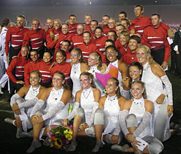
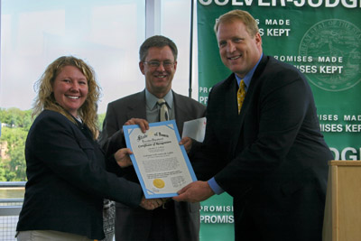

<!DOCTYPE html>
<html lang="en">

<script type="text/javascript" language="JavaScript">

NumberOfImagesToRotate = 318;


FirstPart = '';

function printImage() {
var r = Math.ceil(Math.random() * NumberOfImagesToRotate);
document.write(FirstPart + r + LastPart);
}
//-->
</script>

<head>
	<meta charset="UTF-8">
	<meta name="viewport" content="width=device-width, initial-scale=1">
	<meta name="viewport" content="width=device-width, initial-scale=1.0, minimum-scale=1.0, maximum-scale=1.0, user-scalable=no">

	<title>Colts Youth Organization - News</title>

	<link rel="shortcut icon" href="img/favicon.png">

	<meta name="description" content="">

  <!-- Google Tag Manager -->
  <script>(function(w,d,s,l,i){w[l]=w[l]||[];w[l].push({'gtm.start':
  new Date().getTime(),event:'gtm.js'});var f=d.getElementsByTagName(s)[0],
  j=d.createElement(s),dl=l!='dataLayer'?'&l='+l:'';j.async=true;j.src=
  'https://www.googletagmanager.com/gtm.js?id='+i+dl;f.parentNode.insertBefore(j,f);
  })(window,document,'script','dataLayer','GTM-NPBD2GS');</script>
  <!-- End Google Tag Manager -->

	<!-- CSS -->
	<link href="css/preload.css" rel="stylesheet" media="screen">
	<link href="css/bootstrap.css" rel="stylesheet" media="screen">
	<link href="css/font-awesome.min.css" rel="stylesheet" media="screen">
	<link href="css/icon_colts.css" rel="stylesheet" media="screen">
	<link href="css/font-bank-gothic.css" rel="stylesheet" media="screen">
	<link href="css/animate.min.css" rel="stylesheet" media="screen">
	<link href="css/slidebars.css" rel="stylesheet" media="screen">
	<link href="css/lightbox.css" rel="stylesheet" media="screen">
	<link href="css/jquery.bxslider.css" rel="stylesheet">
	<link href="css/syntaxhighlighter/shCore.css" rel="stylesheet" media="screen">

	<link href="css/style-red.css" rel="stylesheet" media="screen" title="default">
	<link href="css/width-full.css" rel="stylesheet" media="screen" title="default">

	<link href="css/buttons.css" rel="stylesheet" media="screen">

	<!-- HTML5 shim and Respond.js IE8 support of HTML5 elements and media queries -->
	<!--[if lt IE 9]>
		<script src="js/html5shiv.min.js"></script>
		<script src="js/respond.min.js"></script>
	<![endif]-->

	<script type="text/javascript" src="http://coltsdci.tumblr.com/api/read/json"></script>

</head>

<body>
<!-- Google Tag Manager (noscript) -->
<noscript><iframe src="https://www.googletagmanager.com/ns.html?id=GTM-NPBD2GS"
height="0" width="0" style="display:none;visibility:hidden"></iframe></noscript>
<!-- End Google Tag Manager (noscript) -->

<!--#include file="includes/header.shtml" -->
<div id="include-header"></div>

<!--#include file="includes/menu.html" -->
<div id="include-menu"></div>

<header class="main-header">
  <div class="container">
    <h1 class="page-title pull-left">2007 News</h1>
    <span class="pull-right hidden-sm hidden-xs">
      	<script type="text/javascript" language="JavaScript"><!--
printImage();
//--></script>
		<script type="text/javascript" language="JavaScript"><!--
printImage();
//--></script>
		<script type="text/javascript" language="JavaScript"><!--
printImage();
//--></script>
    </span>
  </div>
</header>

<div class="container">
	<div class="row">
		<div class="col-xs-12">
		<!--<p class="slogan text-center animated bounceInLeft animation-delay-12">Join the Colts!</p> -->
			<a name="21" id="21"></a>
            <h1 class="section-title no-margin-top">Bianca Vocke Laid To Rest</h1>
		</div>
	</div>
                <p><i>December 17, 2007</i></p>
                <p>If you have not had a chance to contribute to the fund raising efforts, please do so now.  Both families face financial challenges, too. Thank you. You can make a donation via the Colts Store, as well. <a href="http://www.colts.org/store/site/department.cfm?id=C42769F8-D61A-D555-D9052E3C0A73714E&killnav=1">Click here</a> to make a contribution using your credit card on the Colts secure site.</p>
                <p>TEXT OF HER EULOGY.</p>
                <p>In Honor of Bianca Laura Jean Vocke</p>
                <p>Notes from a remembrance delivered at her funeral on Saturday, December 15, 2007 by Greg Orwoll:<br>
It is my honor to welcome you here this morning. I see in the entry way of this beautiful church this morning a poster for a program called 'Hands Around the World'. It reminds me of what Bianca has done. Her journey has been followed and she and her family have received support from literally around the world. It has been astounding, overwhelming and humbling. We see an internet site called 'facebook' an area called 'Pray for Bianca' that friends put up that now has over 1,200 members. There are 119 photos of Bianca posted on it. There are 338 messages for her and her family posted on it.</p>
<p>As of this morning, I have received at the Colts office via our web site, and delivered to B and her family, 479 messages of support. They came from literally around the world. The emt who treated her at the accident site has called and sent his support and sympathy. The doctor who first treated her and stabilized her at the first hospital sent an email that was truly astounding  sending his sympathy, remarking on what an amazing young lady she must have been as he has followed our web site and facebook. He also included in his message a moving and powerful plea to young people everywhere, from his perspective that he asked that we share in her honor.  We have and we will continue to distribute this message to young people far and wide.  Each of the 300 young people who are here auditioning for the Colts this weekend have received a copy, with instructions to distribute it to everyone they know.  It is a message and a lesson from B, and it will make a difference to many. Nurses who treated her are here from Iowa City. We had 14,000 visits to our web site from 17 countries in three days.</p>
<p>Look at all of us here together today - Senior High and senior color guard.  Friends and family from far and wide. Her Colts family. Did this incredible outpouring happen just because someone young and wonderful passed away tragically?  Did this groundswell happen just because someone was in drum corps and color guard and high school? No.  It happened because it was Bianca. I have no doubt that B was in charge this whole time, and I have no doubt that B brought us all together today for a reason.  She also gave us the time we needed with her and with each other before she left. In these amazing letters I received for her and her family, I saw many constants:<br>
Her smile<br>
Her beautiful eyes<br>
Her determination<br>
Her talent<br>
Her joy<br>
Her courage<br>
Her fight<br>
Her drive<br>
Her attitude<br>
Her love of life<br>
Her many important friendships<br>
How she would light up a room with her smile and her personality<br>
How show would light up a stadium with her presence and her performance<br></p>

<p>I was struck by the number of people who called her a best friend. I heard from a drum corps fan who, who when he saw her photo, recognized her immediately as the young lady he watched light up the entire Rose Bowl for him at DCI finals this summer. Bianca pulled together thousands of people in a common bond all over the world and made some amazing things happen. How many extra hugs between parents and children happened all over the world because of this and because of her? How many indestructible teenagers did she save by instilling a pause in them before they make a bad choice? How many broken relationships are being mended because of her reminder that life is short and life is fragile?  I heard from a couple of people who did just that because of her lesson.</p>
<p>She taught us to tell each other what we think and to value each other more. Bianca left each of us a better person for having known her. Her sister said a big worry she had was she didn't think she had many friends... Look around here.  What can we learn from that? How did she not know? Think how many people she affected by her sheer joy of living. She was a star but she was too humble to believe it.</p>

<p> Bianca Vocke, 1990-2007 </p>
<p>I read of a man who stood to speak at the funeral of a friend. He referred to the dates on her tombstone that mark the beginning and the end. He noted that first came the date that was her birth, and then spoke of the second date with tears. But he said what mattered most of all was the dash between the years. For that dash represents all the time that she spent alive on earth, and now only those who loved her know what that little line was worth. What matters is how we live and love and how we spend our dash. So think about this long and hard.  Are there things you'd like to change?  For you never know how much time is left that can still be rearranged. Perhaps be less quick to anger and quicker to show appreciation and friendship, and love the people around us as we have never loved them before. If we tell each other that we love them - and more often wear a smile - remembering that our special dash may only last a little while. When all is said and done, will you be proud of how you spent your dash?</p>
<p>Bianca can be proud of how she spent her dash.</p>
<p>It was my honor to get to know her family through this ordeal.  I can see where she came from.  To you all, our sympathies and thanks. Jean, Jay and John, you raised an amazing young lady who has affected and changed every person here. Thank you. All who knew her loved her, and all she knew she loved. Thank you Bianca for how you lived your wonderful life, and thank you for sharing it with us. When we think of Bianca and her short but amazing life, I'm sure what she would want us to think.</p>
<p>Don't cry because it's over, smile because it happened.</p>
                <p><i>Return to <a href= "news.html">Colts News</a></i>.</p>
           </div>
<!-- container -->    

<br>

<div class="container">
	<div class="row">
		<div class="col-xs-12">
		<!--<p class="slogan text-center animated bounceInLeft animation-delay-12">Join the Colts!</p> -->
			<a name="20" id="20"></a>
            <h1 class="section-title no-margin-top">Funds Established To Assist Bianca's And Erin's Families With Expenses</h1>
		</div>
	</div>
                <p><i>December 8, 2007</i></p>
                <p>There are accounts for both families at Dupaco Community Credit Union, 3299 Hillcrest Rd., Dubuque, IA 52001, c/o Sue Hallahan. You may also mail your contribution to us at Colts, P.O. Box 515, Dubuque, IA 52004-0515 and we will get it to them.</p>
                <p>Checks may be made out either or both:<br>
                Bianca Vocke Fund<br>
                Erin Reichle Fund</p>
                <p>You can make a donation via the Colts Store, as well. <a href="http://www.colts.org/store/site/department.cfm?id=C42769F8-D61A-D555-D9052E3C0A73714E&killnav=1">Click here</a> to make a contribution using your credit card on the Colts secure site.</p>
                <p>The Senior High School color guard has begun doing fundraising programs for both families as well. There are tremendous expenses that the families have and will continue to incur. Please do what you can to assist them in this time of need. B's mom had quit her job to be with her to the end, and Jay was off work for over a week as well. Erin's parents have similar situations. Thank you again for all the best wishes that continue to come in.  What a difference they have made to both families!</p>
                <p>Take care,<br>
                Greg</p>
                <p>You may call us at the Colts office at any time for further information at (563) 582-4872. Thank you for your support of our families and our kids!</p>
                <p><i>Return to <a href= "news.html">Colts News</a></i>.</p>
           </div>
<!-- container -->    

<br>

<div class="container">
	<div class="row">
		<div class="col-xs-12">
		<!--<p class="slogan text-center animated bounceInLeft animation-delay-12">Join the Colts!</p> -->
			<a name="18" id="18"></a>
            <h1 class="section-title no-margin-top">Two Colts Members Seriously Injured In Car Accident</h1>
		</div>
	</div>
                <p><i>December 1, 2007</i></p>
                <p>Erin is in a hospital in Waterloo, Iowa with serious back and neck injuries plus other injuries. Bianca had to be air-lifted to The University of Iowa Hospitals overnight. I talked to Bianca's mother earlier this evening to be make sure we have the most accurate information possible...</p>
                <p>Bianca's condition has improved from "critical" to "critical but stable" in the past 18 hours, but she is seriously injured, and her outcome is not yet certain. Your prayers are needed. Prayer and prayer groups make a difference.  If you feel you can provide that support, please do so now. She is in an induced coma at this time and has undergone extensive emergency surgery for internal bleeding and injuries.  She also has swelling on the brain.  An MRI is being performed as I write this to determine the extent of any brain injuries she may have. She was responsive to her mom and others earlier today, which is very good news, but she is far from out of the woods.</p>
                <p>I am convinced that people in a condition like Bianca's not only hear but respond to and benefit from messages that are read to them from friends and others. Please send me your best wishes for her and I will make sure that she hears them.  I am planning to leave to see her at 2 p.m. on Sunday.  Please send your message for her to greg@colts.org and I will get it to her and her family. Please do the same for Erin.  She will have a long and difficult road to recovery as well.</p>
                <p>Thank you. Life is very fragile.  Please don't ever take it for granted. I love you all,<br>
                Greg</p>
                <p><i>Return to <a href= "news.html">Colts News</a></i>.</p>
           </div>
<!-- container -->    

<br>

<div class="container">
	<div class="row">
		<div class="col-xs-12">
		<!--<p class="slogan text-center animated bounceInLeft animation-delay-12">Join the Colts!</p> -->
		  <a name="17" id="17"></a>
            <h1 class="section-title no-margin-top">Colts Relive Memories At Annual Banquet</h1>
		</div>
	</div>
                <p><i>November 27, 2007</i></p>
      <p>Thanksgiving weekend was truly a moment to be thankful for our Colts family! Our Annual Awards & Recognition Banquet allowed us to hear final words from many of our 40 age-outs, recognize many of the staff and volunteers who make it all happen, and kick-off the new season on Sunday morning where those in attendance were introduced to the program concepts, staff, and direction for both corps in 2008. </p>
                <p>Thanks to all who attended to make the weekend memorable. For those who could not be with us, you can order a copy of the 2007 Year In Review DVD by e-mailing: colts@colts.org</p>
      <p>Membership achievement award winners for the Colts and the Cadets members were:</p>

      <p><b>Cadets Brass</b><br>
      Outstanding First Year Members: Blake Neebel/Anna Rechtenbach<br>
      Most Improved: Lily Brondyke/Blake Neebel<br>
      Outstanding Section Member: Joey Appleby<br></p>
      
      <p><b>Cadets Percussion</b><br>
      Outstanding First Year Members: Ryan Farris/Ryan Howerton<br>
      Most Improved: Jordan Rotz<br>
      Outstanding Section Members: Wade Gibson/Jon Stelken<br></p>
      
      <p><b>Cadets Color Guard</b><br>
      Outstanding First Year Member: Lindsey Spillman<br>
      Most Improved: Kierre Wood<br>
      Outstanding Section Member: Mitchell Stolberg<br></p>
      
      <p><b>Cadets of the Year:</b> Casey Hallahan/Josh Wernimont</p>
      
      <p><b>Colts Brass</b><br>
      Outstanding First Year Member: Jackie Paschang<br>
      Most Improved: Carrie Nageotte<br>
      Outstanding Section Member: Scott Oliver<br></p>
      
      <p><b>Colts Percussion</b><br>
      Outstanding First Year Members: Eric Petrinowitsch/Marty Ryan<br>
      Most Improved: Chris Sikkema<br>
      Outstanding Section Members: Jack Borland/Jared Goede<br></p>
      
      <p><b>Colts Color Guard</b><br>
      Outstanding First Year Members: Saori Terao/Ashley Metzger<br>
      Most Improved: Kayla Kenyon<br>
      Outstanding Section Member: Elizabeth Theobald<br></p>
      
      <p><b>Colts Visual</b><br>
      Most Improved: Carrie Nageotte<br>
      Outstanding Marcher: Katrina Panovich<br></p>
      
      <p><b>Robert M. Buelow Award:</b> Katrina Panovich</p>
      
      <p>Age-Out Awards were presented to 40 members of the Colts. These individuals, and the number of years marched, were:<br>
      Matt Amos - 1<br>    
      Josh Gosney - 1<br>
      Bryce Lowman - 1 <br>     
      Kari Martin - 1 <br>  
      Francisco Masferrer - 1 <br>     
      Ashley Metzger - 1   <br>   
      Jessica Murdoch - 1 <br>     
      Jackie Paschang - 1  <br>   
      Rebecca Phillips - 1  <br>    
      Fujino Tsuha - 1 <br>     
      Sharon Zearfoss - 1 <br>     
      Devin Burgess - 2 <br>     
      Matthew Coleman - 2   <br>   
      Ryan Dodd - 2  <br>    
      Mike Freeland - 2  <br>    
      Lauren Garten - 2 <br>     
      Chris Jansen - 2 <br>     
      Kevin Kahl - 2 <br>     
      Ashley Rycroft - 2 <br>     
      Ryan Uitenbroek - 2  <br>    
      David Alford - 3 <br>     
      Jack Borland - 3  <br>    
      Dee Casper - 3 <br>     
      Jeff Decker - 3 <br>     
      Dan Gannaway-Pitts - 3    <br>  
      Jared Goede - 3   <br>   
      Evan Guerra - 3  <br>    
      Aaron Hudson - 3    <br>  
      Amy Mascaro - 3  <br>    
      Deanna Miller - 3  <br>   
      Jenny Acheson - 4    <br>  
      Rachael Baethke - 4    <br>  
      Melanie Frost - 4  <br>   
      Britt Panuska - 4  <br>    
      Brandon Rogers - 4    <br>  
      Kaitlyn Summitt - 4    <br> 
      Matthew Aslesen - 5    <br> 
      Katrina Panovich - 5   <br>   
      Vanessa Hauser - 6   <br>   
      Elizabeth Theobald - 7<br>     
      We will miss their 106 years of combined experience. Congratulations to all age-outs!</p>
      <p>The Sunday meeting was a very successful and exciting kick-off for the 2008 season. Staff for the Colts and Colt Cadets gave overviews of the direction of their programs for the year.
                  
                  Please send your <a href="rsvp.cfm">RSVP</a> for December 14-16 Colts camp today! Membership materials were mailed several weeks ago, so if you didn't get yours, provide us your new address right away! Let us know your plans for the upcoming year! The Colt Cadets will begin rehearsals on February 17, 2008.
                  
                  Our upcoming year, celebrating the 45th Anniversary of the Colts Youth Organization, promises to be exciting and successful.
  </p>
                <p><i>Return to <a href= "news.html">Colts News</a></i>.</p>
</div> 
<!-- container -->    

<br>

<div class="container">
	<div class="row">
		<div class="col-xs-12">
		<!--<p class="slogan text-center animated bounceInLeft animation-delay-12">Join the Colts!</p> -->
			<a name="16" id="16"></a>
            <h1 class="section-title no-margin-top">Colts Announce 2008 Program</h1>
		</div>
	</div>
                <p><i>November 20, 2007</i></p>
                <p>The Colts Drum and Bugle Corps is pleased to announce their 2008 production - "NIGHT AND DAY" The show will feature the music of Bernstein, Rozsa, Porter, and Lloyd Webber.</p>
                <p>The program calls for and leaves room for a fully developed visual production, while using music and a theme that is accessible and exciting for the audience, while being challenging and educational for the members.</p>
                <p>"It is indeed a powerful thing when the entire design team can return to pick up where they left off and continue to build their vision for not only the immediate program, but also the direction for the Colts. This program concept is entirely different than last year's in the details, but at the same time, it will seem quite familiar because what is consistent is another program that will allow our members success, and allow our audiences to enjoy and participate in their success," said Greg Orwoll, Colts Executive Director.</p>
                <p>"It is accessible, yet it has depth, it has melody, yet there are no transcriptions, it has variety yet it is connected and it has excitement, both visually and musically that we intend to blend into another crowd favorite", concluded Orwoll.</p>
                <p>Details of the program will be announced and discussed at the 2008 Kick-Off meeting on Sunday morning, November 25.</p>
                <p>Design meetings have been held throughout the fall, and the final details were put in place at a full designer and caption head staff meeting in Indianapolis this past weekend, held during the Bands of America Championships weekend.  Many of the Colts staff members had bands participating in the competition.</p>
                <p><i>Return to <a href= "news.html">Colts News</a></i>.</p>
           </div>
<!-- container -->    

<br>

<div class="container">
	<div class="row">
		<div class="col-xs-12">
		<!--<p class="slogan text-center animated bounceInLeft animation-delay-12">Join the Colts!</p> -->
			<a name="15" id="15"></a>
            <h1 class="section-title no-margin-top">New Program Announced - VOCAL FUSION!</h1>
		</div>
	</div>
                <p><i>October 5, 2007</i></p>
                <p>The first rehearsal was a great success, and work was already started on music and movement for the first performance scheduled for the first of November. The next rehearsal and open house is Sunday, October 14 at 3:00 at Prescott. There is an opportunity for new members to attend at any time.  Enrollment is not limited! All interested students are welcome to attend for no charge and with no commitment. Co-directors for the program are Patti Millius and Jake Weires.</p>
                <p><a href="dyc.asp">Vocal Fusion</a> is a performance based ensemble that performs a variety of vocal music while working to fine tune student individual vocal and performance abilities inside a group setting.Many students may be given opportunities to solo and movement will be a big part of this new program. A love of singing and performing is expected and each students' knowledge of music and performing abilities will be strengthened inside this ensemble.</p>
                <p>Please contact the Colts office for additional information or to be added to our mailing list (563-582-4872 or colts@colts.org).</p>
                <p>Check out the article in The Telegraph Herald: <a href="http://www.thonline.com/article.cfm?id=175441">TH article</a></p>
                <p><i>Return to <a href= "news.html">Colts News</a></i>.</p>
           </div>
<!-- container -->    

<br>

<div class="container">
	<div class="row">
		<div class="col-xs-12">
		<!--<p class="slogan text-center animated bounceInLeft animation-delay-12">Join the Colts!</p> -->
			<a name="14" id="14"></a>
            <h1 class="section-title no-margin-top">Wow! What An Experience!</h1>
		</div>
	</div>
                
                <p><i>August 13, 2007</i></p>
                <p>As you know by now, The Colts made finals in Pasadena.  We took 11th on both Thursday and Friday, and ended up 10th in finals. Random thoughts:  I'm writing this from Emporia, KS outside a nice Starbucks while the 24 kids and drivers who remain with the buses wander off foraging for food.</p>
                <p>Last night and today on the way home, I achieved my personal goal of sleeping through at least two states, and after a couple of overheating problems in Arizona yesterday, we are all intact and about 9 hours from Dubuque.  My driving shift is due now, so I'll b helping to finish the drive from here to Dubuque.</p>
                <p>We dropped about 90 off at LA Airports overnight Sunday morning, around 3 am., and I understand they all got out before the LAX computer crash. They are all back at "real life" already, hopefully reflecting on a summer of great accomplishments and personal breakthroughs.</p>
                <p>In our final meeting following finals, I emplored them to now take what they have become and apply it to life.  They are the top 1% and they have the obligation to change their worlds. We discussed their obligations to themselves and their world and that they have a finite amount of time in this world to truly make a difference. We even discussed what it takes and steps to take now to become wealthy in a financial way too.  Not because of the trips to Cancun they can take but because it's their responsibility to be able to do things for others. An emotional final circle of members, staff, parents and volunteers experienced the closure of what has been the most amazing Colts season ever.</p>
                <p>Members, please don't lose track of each other and please work hard to apply what you learned to everything you do. Parents, you now have a different human being for a son or a daughter.  Support them in their newly found power to acheive and give them space to find out where they fit in "in their other world".  It is a difficult transformation.  They have new habits, new beliefs and new abilities.  Help them as they find their new place.</p>
                <p>To all, thank you! We had dozens of well wishers send notes via email, and they were all posted for the corps to read.  It made a tremendous difference to us all. Thank you! To parents who were there to see this amazing adventure first hand, can you take a minute to let me know what you thought, and if it so moves you, to let the Dubuque community know through a letter to the editor? The Telegragh Herald has a web site - thonline.com that has a link for letters.</p>
                <p>Help me continue to provide this experience.  Our community probably now knows about the "Top 10" - and that's great, but they don't always understand what we do in the process, that is frankly more important.  Your help in this would be a tremendous boost. So, through the tears, the sweat, the frustration, the breakthroughs, the standing ovations, the long bus rides, the Two Ocean Tour, and all the challenges that entailed, we have arrived at the end of the journey together. It was a great one.</p>
                <p>I get tears now thinking of that last run through and that standing ovation from 300 of you for a full minute before they were done playing.  I get choked up thinking of how long it took the kids to let go when they were dismissed after finals.  I get a chill when I think of that full stadium standing ovation from 30,000 in the Rose Bowl, I still get a warm feeling when I think of the things the age outs said about this experience on Saturday.</p>
                <p>But I am most proud and emotionally charged when I think of all the kids, and many parents, who "got it" this summer.  Some amazing leaders of the future have been launched into the world this summer, and the world will be a better place for it.</p>
                <p>Thank you all for your part in making the 2007 Colts the ride it was for us all.</p>
                <p><i>Return to <a href= "news.html">Colts News</a></i>.</p>
           </div>
<!-- container -->    

<br>

<div class="container">
	<div class="row">
		<div class="col-xs-12">
		<!--<p class="slogan text-center animated bounceInLeft animation-delay-12">Join the Colts!</p> -->
			<a name="13" id="13"></a>
            <h1 class="section-title no-margin-top">Car Wash A Success</h1>
		</div>
	</div>
                <p><i>June 13, 2007</i></p>
                <p>The Saturday, June 8 car wash is structured as a "wash-a-thon", with pledges per car washed taken in advance by all members of the Colts and the Cadets. The Colts had a much-needed day off of rehearsal and Colts and Cadets were mixed in assignments at 18 simultaneous locations, working together and getting to know each other.</p>
                <p>With a record number of members of the Colts and Cadets, and a record number of cars washed, it is anticipated that the car wash will raise a record amount of over $25,000. This is the one fund raising program that participation is expected of all members. The car wash is free, with donations accepted.  Over $4500 was collected in free will donations, and each driver also recieved a personal invitation to attend Colts local shows.</p>
                <p>The Colts have run the car wash annually since 1986. Over $180,000 has been raised in the past 21 years.  All proceeds of the car wash are used for travel expenses for the Colts and Cadets summer programs. </p>
                <p><i>Return to <a href= "news.html">Colts News</a></i>.</p>
           </div>
<!-- container -->    

<br>

<div class="container">
	<div class="row">
		<div class="col-xs-12">
		<!--<p class="slogan text-center animated bounceInLeft animation-delay-12">Join the Colts!</p> -->
			<a name="12" id="12"></a>
            <h1 class="section-title no-margin-top">Iowa Governor Culver Recognizes Colts and Colts Cadets</h1>
		</div>
	</div>
        		
    		    <p><i>June 3, 2007</i></p>
                <p>The Governor was in Dubuque attending to a series of functions, including the proclamation presentation. The event came together quickly, and on three days notice, all but 8 of the Colt Cadets were on hand for the presentation and to perform a concert for the Governor and many state and local officials. The event took place during a school day, and members took school time off to perform.  Rarely have members been asked to miss school for either the Colts or the Cadets, but with such an educational opportunity available to the kids, it was worthwhile.</p>
                <p>Cadet members in attendance represented 31 different schools in the Dubuque area. The 70-strong Cadets sounded and looked impressive, and both the Governor and Dubuque Mayor Roy Buel took time to listen to the entire show, and talk with and meet many of the members and parents as well.</p>
                <p>The proclamation states "In the name and by the authority of the State of Iowa, Chester J. Culver, Governor of the State of Iowa hereby officially recognizes Dubuque Colts and Colt Cadets as "Iowa's Ambassadors of Music". The proclamation futher states "On behalf of all Iowans, we salute the members, parents, staff, and volunteers of the Dubuque Colts and Colt Cadets and wish them continued success".</p>
                <p>Long-time Colts fan and City Councilman Ric Jones said, after hearing the Cadets "Are you sure this is the Cadets and not the Colts? Wow!"</p>
                <p><i>Return to <a href= "news.html">Colts News</a></i>.</p>
           </div>
<!-- container -->  

<br>

<div class="container">
	<div class="row">
		<div class="col-xs-12">
		<!--<p class="slogan text-center animated bounceInLeft animation-delay-12">Join the Colts!</p> -->
			<a name="11" id="11"></a>
            <h1 class="section-title no-margin-top">Colts Receive Dubuque Racing Association Grant</h1>
		</div>
	</div>
    		    <p><i>May 24, 2007</i></p>
                <p>The Dubuque Racing Association (DRA) has awarded the Colts a grant in the amount of $15,000 to be used for new instruments for the Colt Cadets for the 2007 season.</p>
                <p>In this most recent funding cycle, the DRA distributed a total of $2,314,000 in direct grants to 333 non profit organizations such as the Colts.  Over 600 organizations competed for grants in this program this year. The DRA also distributed $14,364,551 to the City of Dubuque, $375,411 to Dubuque County, $907,000 to the DRA Future Fund for major community projects and $157,000 to the DRA endowment.</p>
                <p>The DRA is a non profit organization which operates the Dubuque Greyhound Park and Casino in Dubuque and also licenses the Diamond Jo Casino in Dubuque. The average grant award to non profit organizations was nearly $7,900. Since 1984, the DRA has awarded the Colts grants in all but one year, with total contributions of over $320,000.</p>
                <p>For more information about the DRA, please visit their web site at www.dgpc.com/dra</p>
                <p><i>Return to <a href= "news.html">Colts News</a></i>.</p>
           </div>
<!-- container -->    

<!--#include file="includes/footer.html" -->
<div id="include-footer"></div>

<!-- Scripts -->
<script src="js/jquery.min.js"></script>
<script src="js/jquery.cookie.js"></script>
<script src="js/bootstrap.min.js"></script>
<script src="js/bootstrap-switch.min.js"></script>
<script src="js/wow.min.js"></script>
<script src="js/slidebars.js"></script>
<script src="js/jquery.bxslider.min.js"></script>
<script src="js/holder.js"></script>
<script src="js/buttons.js"></script>
<script src="js/styleswitcher.js"></script>
<script src="js/jquery.mixitup.min.js"></script>
<script src="js/circles.min.js"></script>

<!-- Syntaxhighlighter -->
<script src="js/syntaxhighlighter/shCore.js"></script>
<script src="js/syntaxhighlighter/shBrushXml.js"></script>
<script src="js/syntaxhighlighter/shBrushJScript.js"></script>

<script src="js/app.js"></script>

<script> 
	$(function(){
		$("#include-header").load("includes/header.html"); 
		$("#include-menu").load("includes/menu.html");
		$("#include-footer").load("includes/footer.html");
	});
</script> 

</body>

</html>
